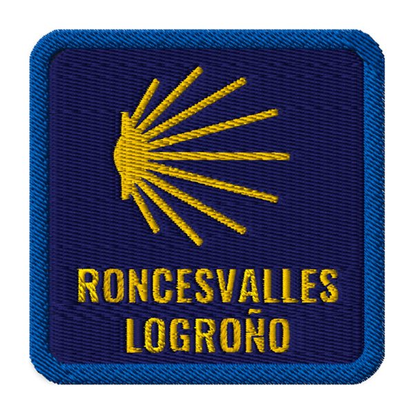

Camino Francés · Roncesvalles – Logroño
Tramo 1 de 5136 km6 etapasCuadrado · 7,6 × 7,6 cm
Este parche recuerda el primer tramo del Camino Francés en España: de Roncesvalles a Logroño, cruzando Navarra por Pamplona, Puente la Reina y Estella hasta entrar en La Rioja. Pensado para peregrinos que hacen el Camino por tramos a lo largo de los años y quieren un recuerdo de cada uno.
19,99 €Próximamente en Amazon